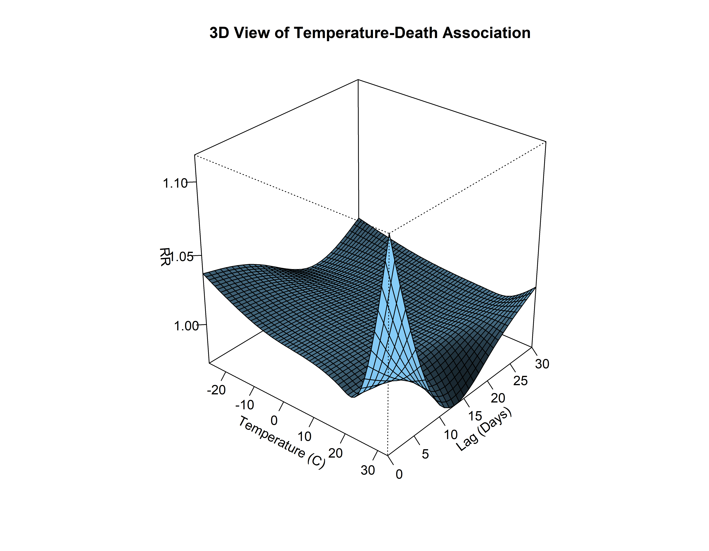
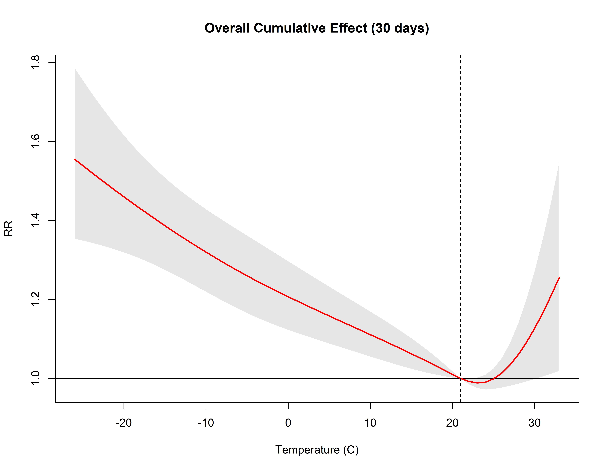
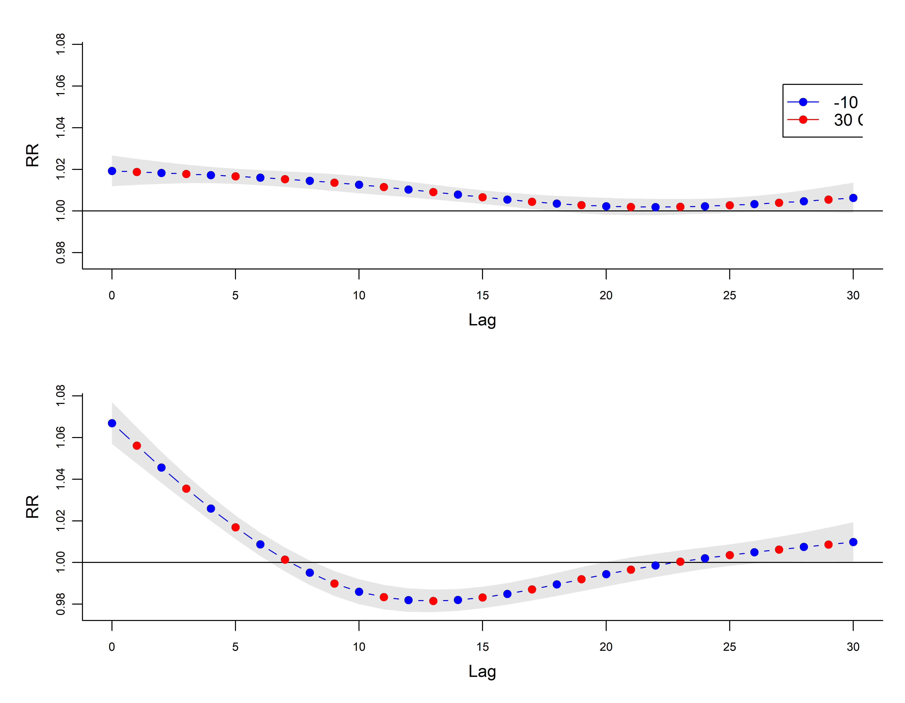

install.packages("dlnm")
install.packages("splines")分布滞后非线性模型 (DLNM) 完全指南
R包
环境流行病学
时间序列
环境流行病学研究的黄金标准：如何量化温度、污染的滞后非线性健康效应。
为什么需要 DLNM？
在环境健康研究中，暴露（如高温）对健康（如死亡）的影响往往具有两个特征： 1. 非线性 (Non-linear)：高温有害，低温也有害（U型或J型曲线）。 2. 滞后性 (Lagged)：今天的高温可能导致3天后的死亡。
DLNM (Distributed Lag Non-linear Models) 正是为解决这两个问题而生。它引入了“交叉基 (Cross-Basis)”的概念，构建了一个暴露-滞后-反应的三维表面。
安装与加载
library(dlnm)
library(splines) # 必须加载，用于样条函数 ns()
library(ggplot2)数据探索
我们使用经典的芝加哥 NMMAPS 数据集 (chicagoNMMAPS)。
data(chicagoNMMAPS)
head(chicagoNMMAPS[, c("date", "death", "temp", "pm10")]) date death temp pm10
1 1987-01-01 130 -0.2777778 26.95607
2 1987-01-02 150 0.5555556 NA
3 1987-01-03 101 0.5555556 32.83869
4 1987-01-04 135 -1.6666667 39.95607
5 1987-01-05 126 0.0000000 NA
6 1987-01-06 130 4.4444444 40.95607构建交叉基 (Cross-Basis)
这是最难理解但最核心的一步。我们需要定义两个维度的基函数： - argvar: 暴露维度的形状（例如，温度对死亡的影响形状）。我们通常用“自然样条 (Natural Cubic Spline)”允许曲线弯曲。 - arglag: 滞后维度的形状（例如，影响随时间衰减的形状）。
# 设定交叉基
# 1. 暴露维度：温度，使用二次 B 样条，节点设在分位数处
# 2. 滞后维度：最大滞后 30 天，使用 4 个自由度的自然样条
cb <- crossbasis(
chicagoNMMAPS$temp,
lag = 30,
argvar = list(fun = "ns", knots = quantile(chicagoNMMAPS$temp, c(0.1, 0.75, 0.9))),
arglag = list(fun = "ns", df = 4)
)
summary(cb)CROSSBASIS FUNCTIONS
observations: 5114
range: -26.66667 to 33.33333
lag period: 0 30
total df: 16
BASIS FOR VAR:
fun: ns
knots: -3.888889 19.44444 23.88889
intercept: FALSE
Boundary.knots: -26.66667 33.33333
BASIS FOR LAG:
fun: ns
knots: 10 20
intercept: TRUE
Boundary.knots: 0 30 拟合 GLM 模型
将交叉基矩阵 cb 作为一个预测项放入准泊松回归模型中。同时我们要控制混杂因素： - 长期趋势与季节性: ns(time, 7*14) (每年 7 个自由度是惯例)。 - 星期几效应: dow。
# 拟合模型
model <- glm(
death ~ cb + ns(time, 7 * 14) + dow,
family = quasipoisson(),
data = chicagoNMMAPS
)预测与效应估计
使用 crosspred() 进行预测。必须选定一个参考值 (Centering Value)。对于温度，我们通常选择“最适宜温度”或中位数。RR 值是相对于这个参考值的风险比。
# 以 21 度 (假设的舒适温度) 为参考
pred <- crosspred(cb, model, cen = 21, by = 1)结果可视化
图示是 DLNM 的灵魂。
(1) 3D 暴露-滞后-反应曲面
这张图展示了全貌： - X轴：温度 - Y轴：滞后天数 - Z轴：相对风险 (RR)
plot(pred, "3d",
xlab = "Temperature (C)", ylab = "Lag (Days)", zlab = "RR",
main = "3D View of Temperature-Death Association",
theta = 40, phi = 30, ltheta = -120 # 调整视角
)
(2) 总体累积效应 (Overall Cumulative Effect)
这是最常汇报的结果。它把所有滞后天数的效应加总，回答“某天暴露于某温度，未来30天的总风险是多少？”
plot(pred, "overall",
xlab = "Temperature (C)", ylab = "RR",
main = "Overall Cumulative Effect (30 days)",
lwd = 2, col = "red"
)
abline(v = 21, lty = 2) # 参考线
(3) 切片图 (Slices): 特定维度效应
我们可以切片看特定温度的滞后形态。例如，看 30°C (高温) 和 -10°C (低温) 的风险随时间的变化。
# 绘制特定温度的滞后曲线
plot(pred, "slices",
var = c(-10, 30),
col = c("blue", "red"),
type = "b", pch = 19,
main = "Lag-Response at Low (-10) vs High (30) Temp",
ylab = "RR", xlab = "Lag Days"
)
legend("topright", legend = c("-10 C", "30 C"), col = c("blue", "red"), lty = 1, pch = 19)
解读： - 高温 (30°C, 红色)：效应出现得非常快（当天或第1天），但也消失得快（“收获效应”, Harvesting Effect）。 - 低温 (-10°C, 蓝色)：效应出现得晚，但持续时间长（可能持续2-3周）。
参考文献
- Gasparrini, A. (2011). Distributed Lag Linear and Non-Linear Models in R: The Package dlnm. Journal of Statistical Software.
- Gasparrini, A., et al. (2010). Time-series analysis on the health effects of temperature: advancements and limitations.